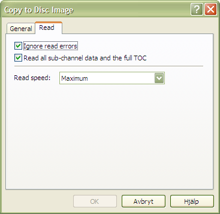

This topic covers the read options that appear on various places in InfraRecorder, for example when you want to copy a disc either to a disc image or to another disc.
Altough these options are accessable in many different contexts as mentioned above, they are always presented in a similar way:

Read Settings
Ignore read errors
Enabling this option will cause the high level error checking not to abort when errors are found in the data stream. The drive will also be switched into a mode where it ignores read errors in data sectors that are a result of uncorrectable ECC/EDC errors before reading.
Read all sub-channel data and the full TOC
When this option is enabled the disc will be read with all sub-channel data and a full TOC. The full TOC data will be put into a file with similar name to the specified image name but with the suffix .toc.
Read speed
Select the speed to use when reading the disc. Selecting the Maximum option will automatically select the highest speed that the drive is capable of. Only MMC compliant drives will benefit from this option. The speed of non MMC drives is not changed.
Using a lower speed may increase the readability of a disc.